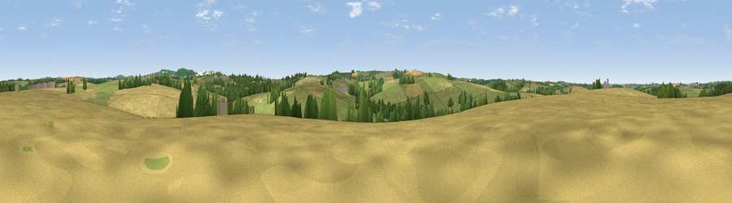

Viewpoint near Kestle Mill
#35887 in England · top 69% of its area beats it · near Kestle MillThe view, rendered

A 360° render of this exact spot computed from the terrain model, tree cover and land cover — summer colours, afternoon light, calibrated against photographs of famous viewpoints. Real trees, hedges and buildings will differ in detail.
The panorama
Grey silhouette: terrain skyline in each direction (720 bearings, Earth curvature and refraction included). Dashed green: skyline with trees (+15 m) and buildings (+8 m) as obstacles. Blue strip: how far the ground is visible on each bearing.
Where the view opens
Wedge length = distance to the farthest visible ground on that bearing (vegetation-aware). Rings at 10, 25 and 50 km.
What fills the view
51% grassland · 40% cropland · 8% woodland · 1% built-up
Angular shares of the visible panorama (visual magnitude), not map area. Landscape diversity 0.43 (0–1 Shannon).
Key numbers
More beautiful places nearby
The staircase of upgrades: each row has a higher view potential than everything closer. Driving times are estimates from straight-line distance, calibrated against real road routing — check an actual route before setting out.
| Place | Direction | Drive | Score |
|---|---|---|---|
| Viewpoint near St. Newlyn East | SSW · 1 km | ~4 min | 50.1 |
| Viewpoint near Kestle Mill | N · 3 km | ~6 min | 51.0 |
| Viewpoint near St. Newlyn East | S · 3 km | ~7 min | 66.1 |
| Viewpoint near St. Newlyn East | SSW · 3 km | ~7 min | 70.7 |
| Penhale Hill | E · 6 km | ~13 min | 80.3 |
| Viewpoint near Penhale | ESE · 6 km | ~13 min | 81.7 |
| Viewpoint near Foxhole | E · 12 km | ~23 min | 86.4 |
| Viewpoint near Stenalees | E · 14 km | ~26 min | 88.0 |
50.37445, -5.01486 · source: screening · position refined by local search. Computed location — check access rights before visiting.